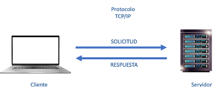
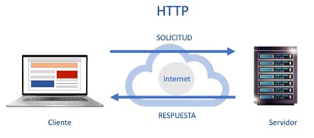

Según Wikipedia, “una aplicación web o web app es un programa de computador cliente-servidor en el cual, el cliente (incluyendo la interface de usuario y la lógica del lado del cliente) se ejecuta en un navegador web”.
De la definición anterior, resaltemos que el cliente de una aplicación web se ejecuta en el navegador web. En efecto, las aplicaciones web no dependen del Sistema Operativo (SO) del equipo, sino del navegador web en el que se ejecutan y visualizan. Es el navegador web el que está instalado directamente en el equipo, mas no la aplicación web como tal. El navegador web se convierte en un instrumento para visualizar la aplicación web, una acción que se denomina renderización. A diferencia de las aplicaciones de escritorio que usan directamente los recursos del SO en la que están instaladas, las aplicaciones web consumen los recursos directamente del navegador web donde se visualizan.
Esto presenta una ventaja competitiva de las aplicaciones web frente a las aplicaciones de escritorio, y es, la instalación. Es más costoso instalar una aplicación de escritorio que una aplicación web. Por ejemplo, si tenemos 10 computadores en los cuales deseamos que los usuarios utilicen la aplicación Microsoft Word (versión de escritorio), debemos instalar dicho programa en los 10 computadores, ya que la aplicación depende directamente de los recursos del sistema operativo del equipo para funcionar. En cambio, con la versión web de la aplicación Microsoft Word, basta con que el equipo tenga instalado un navegador web (Chrome, Safari, etc) para que el usuario pueda acceder directamente al programa y así evitarnos las 10 instalaciones del programa. Es más, el uso de la aplicación no solo estará limitado a los 10 computadores, sino que cualquier usuario con un computador y navegador web, podrá acceder a la aplicación web MS Word.
Arquitectura Web
Hasta aquí hemos dicho que, el navegador web es el responsable de desplegar (visualizar o renderizar) la aplicación web. Pero, entonces ¿Dónde está físicamente una aplicación web?
Para contestar esta pregunta consideremos, de la definición de web app, la siguiente frase “una aplicación web o web app es un programa de computador cliente-servidor”. Entonces, primero definamos a qué nos referimos con una arquitectura cliente-servidor. Una arquitectura cliente servidor en su forma más simple consta de (como se muestra en la Figura 1):

Figura 1. Arquitectura Cliente Servidor
- Cliente (un computador cualquiera)
- Servidor (un computador cualquiera que hace su función de servir recursos)
- Enlace de comunicación entre el cliente y el servidor, donde el cliente solicita un recurso y el servidor “sirve” el recurso solicitado por el cliente. Esta comunicación solicitud-respuesta se realiza siguiendo un protocolo de comunicación, en este caso, el protocolo TCP/IP (el protocolo de Internet).
La arquitectura de la Figura 1, a pesar de brindar todo lo necesario para el funcionamiento de una aplicación en dos capas (como puede ser una aplicación de escritorio), no es suficiente para ejecutar una aplicación web. Es entonces necesario considerar ciertas modificaciones en esta arquitectura para que funcionen nuestras aplicaciones web. A esta nueva arquitectura, basada en la arquitectura de la Figura 1, la llamaremos “Arquitectura Web” y que se muestra en la Figura 2 y cuyos componentes están descritos a continuación:

Figura 2. Arquitectura Web, basada en la arquitectura Cliente-Servidor
- Cliente. – En este caso, el cliente deja de ser el equipo en sí (computador) sino que pasa a ser el navegador web (browser) que se ejecuta en el equipo del usuario.
- Servidor. - En este caso, el servidor no puede ser cualquier servidor. Debe ser un servidor estrictamente para “servir” hipertexto, es decir, páginas web (también conocidos como “documentos”). Ya que es especial, lo llamaremos Servidor Web
- Enlace de comunicación entre el cliente y el servidor. - En este caso, el protocolo usado para la web es el Protocolo de Transferencia de Hipertexto (HTTP). HTTP está basado en TCP/IP, es decir, si no existe internet, no existe la web.
Es importante indicar que, a pesar de que la interfaz de usuario (IU) y la lógica del cliente de una aplicación web se ejecutan y visualizan a través del navegador web, tanto la IU como la lógica del cliente residen físicamente en el servidor. Es el servidor el que contiene las IU y estas son únicamente enviadas al cliente para que se visualicen (renderización).
Es muy importante que tengas presente la arquitectura web y sus componentes, indicados en la Figura 2, ya que en esta figura nos permitirá entender cada sección de la asignatura. Es tan importante esta arquitectura, que haremos referencia a ella a lo largo del curso.